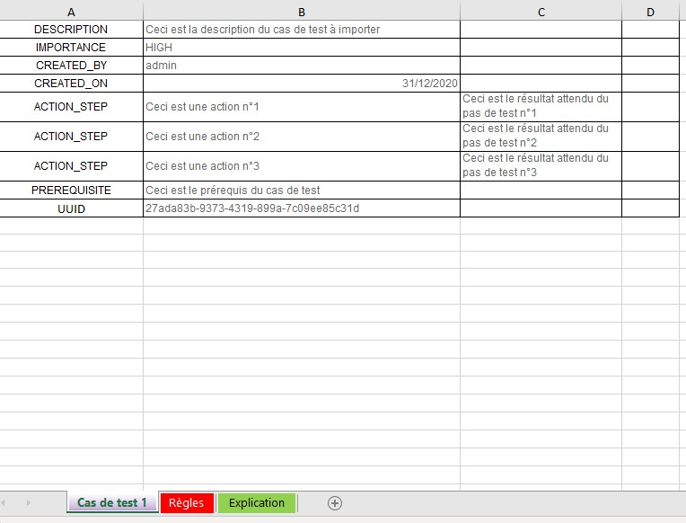

Renseigner un fichier d’import de cas de test
L'import de cas de test via un fichier Excel permet de créer ou modifier un patrimoine de tests en masse. Il est possible d'importer des cas de test, leurs attributs, leurs paramètres et jeux de données ainsi que leur associations à des exigences.
Cette fonctionnalité est très utile :
- lors d'une migration depuis un outil tiers
- pour récupérer un patrimoine de tests existant dans un document
- pour effectuer des modifications en masse sur les cas de test présents dans Squash
L'import de cas de test se fait depuis des fichiers au format .xls, .xlsx, .xlsm ou un dossier Zip.
Info
L'import est réservé aux profils "Administrateur" et "Chef de projet".
Un gabarit d'import pour les formats Excel ou Zip est téléchargeable depuis la popup d'import dans l'espace Cas de test.
Focus
Il n'est pas possible d'importer des cas de test BDD
Il n'est pas possible de modifier le format d'un cas de test (Classique/Gherkin/BDD) via l’import
Structure du fichier d'import au format Excel
Le fichier d'import comprend cinq onglets :
- L'onglet TEST_CASES renseigne les informations liées aux cas de test à importer comme l'emplacement, la description, l'importance, etc.
- L'onglet STEPS renseigne les informations sur les pas de test d'un cas de test classique
- L’onglet PARAMETERS renseigne les informations liées aux paramètres d'un cas de test
- L’onglet DATASETS renseigne les informations liées aux jeux de données
- L'onglet LINK_REQ_TC renseigne les informations pour associer les cas de test aux exigences déjà présentes dans Squash.
Focus
Le fichier d'import doit respecter les règles ci-dessous :
- Les noms des 5 onglets ne doivent pas être modifiés.
- Les entêtes des colonnes ne doivent pas être modifiées.
- Les lignes vides ne sont pas interprétées.
- Les cellules ne doivent pas être fusionnées.
- L'ordre des lignes n'a pas d'importance.
- L'import se fait ligne par ligne.
Onglet TEST_CASES
| Nom de la colonne | Description | Valeur attendue |
|---|---|---|
| ACTION | Valeur qui indique l'action à effectuer. | Champ Obligatoire C : pour la création (Create) U : pour la mise à jour (Update) |
| TC_PATH | Chemin du cas de test. Il commence par "/nom du projet" et se termine par le nom du cas de test. Il inclut le nom du projet car l'import est multi-projet | Champ Obligatoire Par exemple : - /projet/dossier/casdetest |
| TC_NUM | Ordre du cas de test dans son dossier conteneur. - Mode CREATE : si non renseigné, considéré comme le dernier élément du conteneur. Si renseigné, le cas de test est donc créé à cette position. - Mode UPDATE : si non renseigné l'information est ignorée. Si le numéro d'ordre renseigné est différent de l'ordre actuel le cas de test est déplacé à cette nouvelle position. |
|
| TC_UUID | Identifiant universel unique du cas de test. - Mode CREATE : si renseigné, le cas de test est créé avec cet UUID. Si non renseigné, le cas de test est créé avec un UUID généré automatiquement. - Mode UPDATE : la valeur de la colonne TC_UUID n'est pas considérée. Il n'est pas possible de modifier l'UUID d'un cas de test déjà existant dans la base de données. |
Si renseignée, la valeur de la colonne TC_UUID doit correspondre à l'expression régulière : [0-9a-fA-F]{8}-[0-9a-fA-F]{4}-[0-9a-fA-F]{4}-[0-9a-fA-F]{4}-[0-9a-fA-F]{12} |
| TC_REFERENCE | Référence du cas de test | |
| TC_NAME | Nom du cas de test. - Mode CREATE: le champ est ignoré - Mode UPDATE : permet de renommer un cas de test |
|
| TC_MILESTONE | Intitulé du ou des jalons associés au cas de test. Si un objet est associé à plusieurs jalons, chacun des jalons doit être renseigné dans la colonne correspondante séparé par un "|". Mode UPDATE : si la colonne est vide, les associations existantes sont supprimées. |
Par exemple si un cas de test est associé à deux jalons : Jalon1|Jalon 2 |
| TC_WEIGHT_AUTO | Si, à l’import, la valeur est à "1" Squash déduit l’importance du cas de test en fonction des exigences qui lui sont associées y compris celles associées aux cas de test appelés. Si la colonne ou la valeur est omise, la valeur par défaut prise en compte est "0" . |
- "1" : Si le calcul de l’importance est automatique - "0" : Si la valorisation de l’importance est manuelle. |
| TC_WEIGHT | Code de l’importance du cas de test. Si TC_WEIGHT_AUTO = 1, la valeur indiquée pour TC_WEIGHT est ignorée. |
- VERY_HIGH (Très haute) - HIGH (Haute) - MEDIUM (Moyenne) - LOW (Faible) [Valeur par défaut] |
| TC_NATURE | Code de la nature du cas de test | - NAT_ATDD (ATDD) - NAT_BUSINESS_TESTING (Métier) - NAT_FUNCTIONAL_TESTING (Fonctionnelle) - NAT_NON_FUNCTIONAL_TESTING (Non fonctionnelle) - NAT_PERFORMANCE_TESTING (Performance) - NAT_SECURITY_TESTING (Sécurité) - NAT_UNDEFINED (Non définie) [Valeur par défaut] - NAT_USER_TESTING (Utilisateur) |
| TC_TYPE | Code du type de cas de test | - TYP_COMPLIANCE_TESTING (Recevabilité) - TYP_CORRECTION_TESTING (Correctif) - TYP_END_TO_END_TESTING (Bout-en-bout) - TYP_EVOLUTION_TESTING (Évolution) - TYP_PARTNER_TESTING (Partenaire) - TYP_REGRESSION_TESTING (Non-régression) - TYP_UNDEFINED (Non définie) [Valeur par défaut] |
| TC_STATUS | Code du statut de rédaction du cas de test | - APPROVED (Approuvé) - OBSOLETE (Obsolète) - TO_BE_UPDATED (À mettre à jour) - UNDER_REVIEW (À approuver) - WORK_IN_PROGRESS (En cours de rédaction) [Valeur par défaut] |
| TC_DESCRIPTION | Description du cas de test | |
| TC_PRE_REQUISITE | Prérequis du cas de test | |
| TC_CREATED_ON | Date de création du cas de test. Les dates sont exportées dans des cellules de type date ou de type texte au format ISO 8601 | Format : YYYY-MM-DD Si elle n’est pas renseignée, la date courante est utilisée. |
| TC_CREATED_BY | Login du créateur. | Si non renseigné, c'est le login de l’utilisateur réalisant l'import qui est utilisé. |
| TC_LAST_MODIFIED_ON | Date de dernière modification du cas de test | Colonne ignorée si présente dans le fichier d’import |
| TC_LAST_MODIFIED_BY | Login du dernier modificateur. | Colonne ignorée si présente dans le fichier d’import |
| TC_KIND | Code du format du cas de test. Si non renseigné, le cas de test est importé comme un cas de test classique. |
Format : - STANDARD (Classique) - GHERKIN - KEYWORD (BDD) |
| TC_SCRIPT | Script Gherkin du cas de test | |
| TC_AUTOMATABLE | Eligibilité à l’automatisation du cas de test | - M : À instruire [Valeur par défaut] - Y : Eligible - N : Non éligible |
| TC_CUF_<cuf's code> | Une colonne par champ personnalisé. Dans l'en-tête, remplacer <cuf's code> par le code du champ personnalisé. |
Valeur associée au champ personnalisé |
Onglet STEPS
| Nom de la colonne | Description | Valeur attendue |
|---|---|---|
| ACTION | Valeur qui indique l'action à effectuer. | Champ Obligatoire C : pour la création (Create) U : pour la mise à jour (Update) |
| TC_OWNER_PATH | Chemin vers le cas de test propriétaire du pas de test. | Champ obligatoire Par exemple : - /projet/dossier/casdetest |
| TC_STEP_NUM | Numéro d’ordre de l’étape de test (commence à 1) Pour l’import, les numéros peuvent ne pas se suivre : on prend l’ordre relatif entre les différents TC_STEP_NUM. L'ordre d'apparition dans le fichier est pris en compte si deux pas de test ont le même numéro d’ordre, ou si la valeur est absente |
|
| TC_STEP_IS_CALL_STEP | Permet d'indiquer que ce pas de test est soit une action soit un cas de test appelé | - "0" si l’étape est un pas de test [Valeur par défaut] - "1" si l’étape est un cas de test appelé |
| TC_STEP_CALL_DATASET | La colonne n’est prise en compte que si TC_STEP_IS_CALL_STEP = "1" | - "INHERIT" si l’option choisie est de ne pas choisir de jeu de données, le cas de test appelant hérite des paramètres du cas de test appelé - <NAME> : donne le nom du jeu de données choisi. |
| TC_STEP_ACTION | - Action de l’étape - Ou chemin vers le cas de test appelé |
Par exemple, dans le cas d’un appel de cas de test : CALL /projet/dossier/nom_du_CT_appelé |
| TC_STEP_EXPECTED_RESULT | - Résultat attendu de l’étape - Si STEP_IS_CALL_STEP = 1, cette colonne est ignorée |
|
| TC_STEP_CUF <cuf's code> | Une colonne par champ personnalisé. Dans l'en-tête, remplacer <cuf's code> par le code du champ personnalisé du pas de test. | Valeur associée au champ personnalisé |
Onglet PARAMETERS
| Nom de la colonne | Description | Valeur attendue |
|---|---|---|
| ACTION | Valeur qui indique l'action à effectuer. | Champ Obligatoire C : pour la création (Create) U : pour la mise à jour (Update) |
| TC_OWNER_PATH | Chemin vers le cas de test propriétaire du paramètre | Champ obligatoire Par exemple : - /projet/dossier/casdetest |
| TC_PARAM_NAME | Nom du paramètre, doit contenir uniquement les caractères suivants : [0-9], [a-z], [A-Z] et [-,_]. | Champ obligatoire |
| TC_PARAM_DESCRIPTION | Description du paramètre |
Onglet DATASETS
| Nom de la colonne | Description | Valeur attendue |
|---|---|---|
| ACTION | Valeur qui indique l'action à effectuer. | Champ Obligatoire C : pour la création (Create) U : pour la mise à jour (Update) |
| TC_OWNER_PATH | Chemin vers le cas de test propriétaire du jeu de données. | Champ obligatoire Par exemple : - /projet/dossier/casdetest |
| TC_DATASET_NAME | Nom du jeu de données. | Champ obligatoire |
| TC_PARAM_OWNER_PATH | Chemin vers le cas de test propriétaire du paramètre. Cette colonne est nécessaire dans le cas de paramètres venant de cas de test appelés par le cas de test propriétaire du jeu de données. | |
| TC_DATASET_PARAM_NAME | Nom du paramètre pour lequel la valeur sera renseignée. Il doit contenir uniquement les caractères suivants : [0-9], [a-z], [A-Z] et [-,_]. A l’import, si aucun paramètre ne correspond, la valeur est ignorée. | Champ obligatoire |
| TC_DATASET_PARAM_VALUE | Valeur correspondante pour le couple {jeux de données | paramètre} spécifié. |
Onglet LINK_REQ_TC
Pour faire des associations entre les cas de test et des exigences présentes dans le référentiel, les 3 champs sont obligatoires.
| Nom de la colonne | Description | Valeur attendue |
|---|---|---|
| REQ_PATH | Chemin de l'exigence depuis le nom du projet jusqu'au nom de l'exigence (version courante) NB : le nom de la version courante peut différer de celui de la version à lier | Par exemple : - /projet/dossier/exigence - /projet/exiMère/exiFille |
| REQ_VERSION_NUM | Numéro de la version d'exigence à lier | |
| TC_PATH | Chemin du cas de test depuis le nom du projet jusqu'au nom du cas de test | Par exemple : /projet/dossier/casdetest |
Info
Avec un import Excel, il est possible de mettre en forme tous les champs de type texte riche comme la description ou encore les pas de test en utilisant des balises HTML.
Structure du fichier d'import au format Zip
Le fichier zip contient les dossiers, les sous dossiers ainsi que l'ensemble des cas de test à importer.
Pour chaque cas de test à importer, il faut créer un fichier Excel. Chaque fichier doit contenir un onglet avec les informations du cas de test. Le nom de l’onglet doit correspondre au nom du cas de test à importer.
Ces fichiers doivent être placés dans leurs dossiers respectifs afin que les cas de test soient importés au bon emplacement dans la bibliothèque de l'Espace Cas de test.
Par exemple:
- Pour importer 10 cas de test, il faut 10 fichiers Excel.
- Pour importer un cas de test dans un dossier intitulé "Dossier1" : il faut créer un dossier intitulé "Dossier1", y placer le fichier Excel qui contient les informations du cas de test à importer avant de le zipper pour import.
Focus
L’import par .zip ne permet pas d’importer des cas de test Gherkin et BDD
L'import par .zip se fait sur un seul projet à la fois
Seule la création de nouveaux cas de test est possible via un import par .zip
L'import par .zip ne permet pas d'importer les paramètres, les jeux de données et les associations d'un cas de test.
L'onglet du fichier Excel d'un cas de test doit contenir les balises suivantes dans ordre indiqué ci-dessous :
| Balise | Première valeur | Deuxième valeur | Commentaire |
|---|---|---|---|
| Description | Indiquer la description du cas de test. | Cette donnée alimentera le champ "Description" du cas de test | |
| Importance | Indiquer l'importance du cas de test en choisissant l'une des valeurs normées suivantes : - VERY_HIGH (Très haute) - HIGH (Haute) - MEDIUM (Moyenne) - LOW (Faible). |
Cette donnée alimentera le champ "Importance" du cas de test | |
| Created_by | Indiquer le login du créateur. | Cette donnée alimentera le champ "Créé par" du cas de test | |
| Created_on | Possibilité d'inscrire la date soit au format de cellule date (heure incluse) ou texte dans ce dernier cas, indiquer la date de création au format JJ/MM/AAAA. | Cette donnée alimentera le champ "Créé par xxx le …" du cas de test | |
| Action_step | Indiquer l'action à réaliser. | Indiquer le résultat attendu. | Cette balise entraîne la création d'un nouveau pas de test à chaque fois qu'elle est rencontrée. Les pas de test sont créés dans l'ordre du fichier (de haut en bas). |
| Prerequisite | Indique les informations à ajouter dans les "Prérequis" du cas de test. | Si plusieurs lignes du fichier Excel sont renseignées avec cette balise, les différentes valeurs seront concaténées dans le champ "Prérequis". |
Par exemple:
Les informations du cas de test sont contenus dans le premier onglet. Le nom donné à cet onglet sera le nom du cas de test "Cas de test 1"
